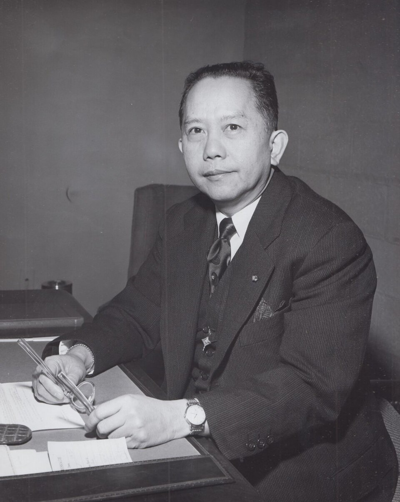
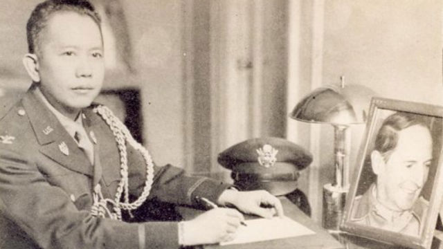
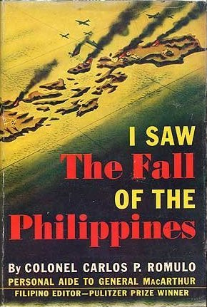
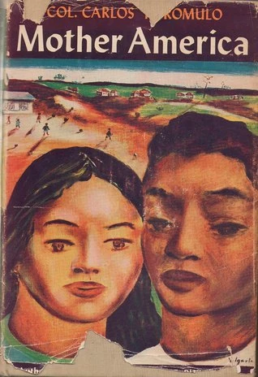
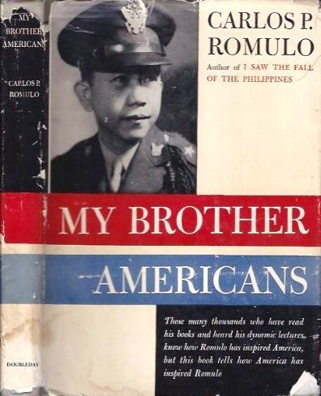
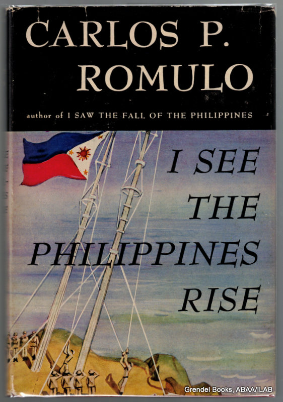
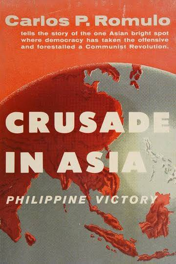
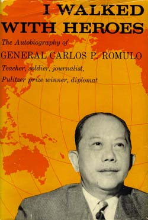
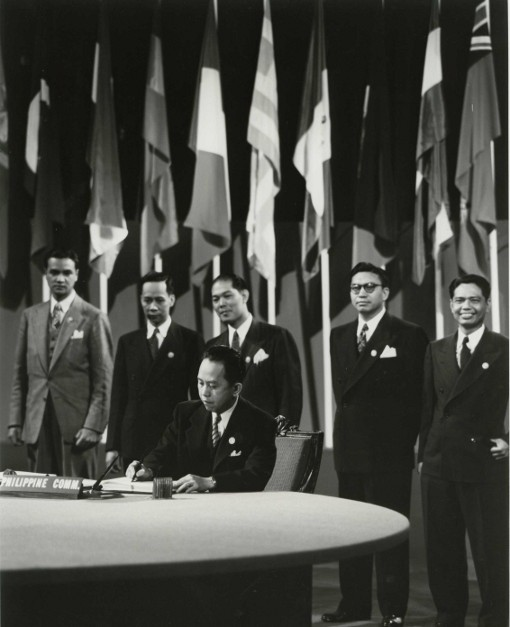

Manila, Philippines · 1901–1985
Carlos P. Romulo
Correspondent. Soldier. Statesman.

Author portrait
assets/images/author-portrait.jpg
Introduction
Welcome to a literary exploration of Carlos P. Romulo, one of the Philippines' most recognized figures in international affairs and a pioneer of English-language Filipino writing.
Romulo's career challenges conventional boundaries of what constitutes literature. Born in 1901, he became not only a Pulitzer Prize-winning journalist but also a major diplomat who represented the Philippines on the world stage. His work demonstrates that writing can simultaneously serve as artistic expression, historical documentation, and national representation.
This blog examines how Romulo's nonfiction works connect personal experience with major historical events, offering readers a Filipino perspective on war, politics, international relations, and the evolving identity of the Philippines. Through his writing, we explore how literature can preserve memory, communicate identity, and help us understand the historical experiences that shaped a nation.
Why This Subject
Romulo was chosen as the subject of this project because his career sits outside the categories Philippine Literature in English is usually taught through. Fiction and poetry dominate most surveys of the field, which can leave students with the impression that "literature" and "eyewitness nonfiction" are separate things. Romulo's case argues otherwise: a journalist who reported the fall of a nation, a soldier who lived what he later wrote about, and a diplomat who represented that nation at the United Nations, all in the same body of work. Studying him is a way of testing how far the definition of Philippine Literature can reasonably stretch — and of asking what is lost if reportage, memoir, and speech are left out of that definition entirely.
About the Author
Carlos P. Romulo (1901–1985) was a Filipino journalist, writer, diplomat, soldier, and public servant whose multifaceted career made him one of the most internationally recognized Filipino figures of the twentieth century.
Jouralism Career
Romulo began his career in journalism before transitioning to diplomacy. He wrote extensively about politics, international events, war, and the Philippines. His writing was characterized by direct realism, grounded in real events and personal experience.
PULITZER PRIZE1942
CORRESPONDENCE
Source: The Pulitzer Prizes — Carlos P. Romulo (see References, Institutional and Historical Sources).
This prestigious recognition elevated him to international prominence and validated Filipino voices in global journalism. Unlike many contemporaries who focused primarily on fiction, Romulo chose to document life through journalism, essays, memoirs, and speeches—a choice that expanded the boundaries of Philippine literature in English.

Wartime service, 1942–1945
assets/images/wartime-correspondent.jpg
Diplomatic Service
Romulo's career eventually brought him to the United Nations, where he represented the Philippines in international affairs. In 1949, he achieved the historic distinction of becoming President of the Fourth Session of the UN General Assembly.
Source: U.S. House of Representatives, Office of the Historian — Carlos Peña Rómulo (see References, Institutional and Historical Sources).
His diplomatic work was deeply connected to his writing. Through speeches and essays, he discussed peace, freedom, national independence, cooperation, and the role of smaller countries on the world stage—helping present Philippine ideas to an international audience.
Military Service
During World War II, Romulo served with General Douglas MacArthur and participated in the wartime government and information effort. He experienced major events connected with the defense and liberation of the Philippines firsthand—an experience that would become crucial material for his books and memoirs.
Major Works
Romulo's literary contributions span multiple nonfiction genres. Each work reflects his unique position as both observer and participant in historical events.

This wartime book describes the fall of the Philippines during the Japanese invasion. It provides readers with a personal, eyewitness view of the events and difficulties experienced during the war, capturing the urgency and tragedy of occupation from a Filipino perspective.

This work reflects on Romulo's experiences in the United States and examines the complex relationship between the Philippines and America. Through personal observation, he explores democratic ideals and the cultural connections that shaped both nations.

Romulo discusses Americans and the wartime relationship between the Philippines and the United States. The book offers a distinctly Filipino perspective on alliance, friendship, and the complexities of colonial and military partnership during conflict.

Written after the war, this work looks at the rebuilding and recovery of the Philippines. It expresses hope for the country's future and documents the resilience of the Filipino people in the face of destruction and occupation.

This work deals with Romulo's views and experiences involving Asia, war, diplomacy, and international affairs. The National Commission for Culture and the Arts includes Romulo's writing in its Philippine history materials, demonstrating the value of his work as a source for understanding Philippine history and public life.

Written well after the war, this memoir looks back across Romulo's career as correspondent, soldier, and diplomat, reflecting on the people who shaped those years. It shows how he used nonfiction not only to report events as they happened, but to make sense of them in retrospect.
Historical Context
Romulo's writing is inseparable from the turbulent historical period that shaped his life and career—the first half of the twentieth century, marked by war, colonial transition, and the struggle for national identity.
World War II (1942–1945)
World War II was arguably the most important experience in Romulo's life. As both a journalist and participant, he witnessed the Japanese invasion, the fall of the Philippines, and the subsequent liberation efforts. His presence alongside General MacArthur placed him at the center of strategic military operations.
These experiences became crucial material for his books and memoirs. Because Romulo was both a journalist and a participant in major events, he was able to record the war from a Filipino point of view—a perspective often absent from Western-dominated narratives of the Pacific theater.
Postwar Recovery
The immediate postwar period saw the Philippines grappling with massive physical destruction, economic collapse, and the psychological trauma of occupation. Romulo's work from this era, particularly I See the Philippines Rise, captures both the devastation and the resilient hope for reconstruction.
Philippine-American Relations
The relationship between the Philippines and the United States was complex—shaped by colonial history, military alliance during the war, and ongoing questions of sovereignty and independence. Romulo's writings, especially Mother America and My Brother Americans, provide nuanced Filipino perspectives on this relationship.
Rather than presenting simple praise or criticism, Romulo acknowledged both the benefits and tensions of this bilateral relationship. His work reflects the historical reality of a Philippines shaped by colonial history, American influence, and the continuous struggle to define its place in the world.
International Affairs and the United Nations
Following the war, Romulo's focus shifted toward international diplomacy. At the United Nations Conference in San Francisco (1945), he represented the newly independent Philippines. His election as President of the UN General Assembly in 1949 symbolized the growing voice of smaller nations in global governance.
Source: U.S. House of Representatives, Office of the Historian — Carlos Peña Rómulo (see References, Institutional and Historical Sources).

UN General Assembly, 1949
assets/images/un-general-assembly.jpg
Through his journalism, speeches, and essays, Romulo presented Philippine concerns to international audiences. His writing thus connects personal and national experiences with larger questions of freedom, independence, and the role of smaller countries in determining their own destinies.
Literary Analysis
Romulo's Perspective and Voice
One of the most important literary qualities of Romulo's nonfiction is its connection to firsthand experience. Because he personally witnessed and participated in major political and wartime events, his writing can present history through an individual perspective rather than as a detached list of facts. This creates a strong relationship between the writer, the events being described, and the reader. His background as a journalist also influences this perspective. Journalism requires attention to events, people, circumstances, and public issues, while memoir and nonfiction allow the writer to reflect on those experiences. Romulo's work therefore occupies an interesting space between historical documentation and literary expression. This perspective can be examined through specific examples from Romulo's writing. Rather than simply stating that his work is based on firsthand experience, readers can look at how he selects details, presents events, describes people, and reflects on what he has witnessed. These choices affect how the reader understands the historical event and also reveal the writer's own position toward it. For example, Romulo's writing can be examined for the relationship between reporting and personal reflection. His journalistic background encouraged him to document events and circumstances, while his personal involvement allowed him to interpret those experiences from the perspective of someone who was actually present. This gives his nonfiction an eyewitness quality while also making the writer's perspective an important part of the reading experience. The blog can therefore include short, properly credited passages from one or more of Romulo's works and explain how the language, details, tone, and point of view contribute to the reader's understanding of the event being discussed. This would allow the audience to see the literary qualities of Romulo's writing directly rather than only learning about them through biography.
Major Themes
War is a central theme in Romulo's writing because it represents both personal experience and a major turning point in Philippine history. His wartime works do more than describe conflict; they preserve Filipino experiences of invasion, hardship, uncertainty, defense, and recovery. Filipino identity is another important theme. Romulo's writing repeatedly considers the Philippines' relationship with other nations while presenting events from a Filipino perspective. This makes questions of national identity and representation important to his work. Another recurring idea is the relationship between the Philippines and the wider world. Through his journalism, essays, memoirs, and diplomatic writing, Romulo presented Philippine concerns to international audiences. His writing consequently connects personal and national experiences with larger questions of freedom, independence, peace, and international cooperation. These themes can be explored more concretely by connecting them to particular works. I Saw the Fall of the Philippines can be used when discussing war, firsthand experience, and the preservation of Filipino experiences during the Japanese invasion. Mother America and My Brother Americans can be used when discussing Philippine-American relations and the way Romulo presented Filipino perspectives in relation to the United States. Crusade in Asia can also be examined in relation to political leadership, national interests, and the Philippines' position in international affairs. The purpose of connecting the themes to specific works is not simply to summarize what each book is about. The analysis should explain what the work reveals about Romulo's perspective and how his treatment of these subjects contributes to the reader's understanding of Filipino identity, history, and experience.
Style and Voice
Romulo's work demonstrates how nonfiction can function as a literary record of a particular period. His writing preserves experiences that are connected to real historical events while also showing how those events were understood by a Filipino writer who experienced them. This connection between literature and history is especially significant in Philippine Literature. A historical event can be recorded through dates and facts, but a literary account can also communicate perspective, emotion, interpretation, and the human experience surrounding that event. Romulo's nonfiction provides an example of how writing can contribute to both historical memory and literary understanding. His work also raises the importance of who gets to tell a nation's story. By writing about war, politics, international affairs, and the Philippines' relationship with other countries from a Filipino perspective, Romulo helped place Philippine experiences into an international conversation. The National Commission for Culture and the Arts provides useful support for this interpretation. Its discussion of literary forms identifies Carlos P. Romulo among Filipino journalist-essayists who contributed to the development of the English essay as an important literary form in the Philippines. This supports the idea that Romulo's writing can be studied not only as historical documentation or journalism, but also within the development of Philippine Literature in English.
Writing, History, and Identity
Where the previous section looks at how Romulo wrote, this one looks at what that writing does for a reader today. A textbook can supply the dates of the Japanese invasion, the San Francisco conference, or the 1949 General Assembly; what it cannot supply is the felt experience of living through them as a Filipino. Romulo's nonfiction closes that gap. Reading him is closer to inheriting a memory than consulting a record, because the account carries the emotional and moral weight of someone who was inside the events he describes. This matters for Filipino identity specifically. A nation's self-understanding is built partly from who is allowed to narrate its history, and for much of the twentieth century that narration came from outside observers. Romulo's presence in the record — as a Filipino describing Filipino experience to an international audience — shifts who holds the pen. It is less a claim that his account is more objective than a Western one, and more a claim that it restores a perspective that had largely been missing. There is also a question of what survives. Government archives keep the facts; they rarely keep the tone, the hesitations, or the hope a period carried. By writing from inside the events rather than about them from a distance, Romulo left behind not just information about the war, the Occupation, and the postwar rebuilding, but a record of how those events actually felt to live through — the part of history that is easiest to lose and hardest to reconstruct once it is gone.
Timeline
1901 — Born in Manila.
1918 — Graduated from the University of the Philippines.
1921 — Earned a master's degree from Columbia University.
1930s — Built his career in journalism and newspaper work.
1942 — Won the Pulitzer Prize for Correspondence for his reporting on Far Eastern developments.
1942–1945 — Worked and served during World War II.
1945 — Represented the Philippines at the United Nations Conference in San Francisco.
1949 — Became President of the Fourth Session of the UN General Assembly.
1985 — Died on December 15.
Importance
The literary blog format allows information about Romulo to be organized into an experience rather than presented as a conventional written report. Readers can move from his biography and major works to historical context, literary analysis, and his continuing relevance. An interactive timeline can help readers understand the relationship between important events in Romulo's life and the development of his writing. Expandable sections for his major works can provide short introductions without overwhelming the page, while visual elements can distinguish historical background from literary analysis. The purpose of the digital design is therefore not simply to make the project attractive. HTML provides the structure for the literary content, CSS can establish a readable and historically appropriate visual identity, and JavaScript can provide interactive elements that help readers explore Romulo's life and ideas. In this way, technology supports the audience's understanding of the literary subject.
Literary Takeaway
Carlos P. Romulo's life shows that a writer can do more than create stories. He used words to report events, record history, explain political ideas, and represent the Philippines. His experiences as a journalist, wartime figure, and diplomat gave his writing a strong connection to real Filipino life. Looking at Romulo through Philippine Literature helps us understand how nonfiction can also preserve culture, history, and identity. His works give readers a Filipino perspective on events that affected not only the Philippines but also the wider world. Ultimately, Romulo's literary significance comes from the way his writing connects the personal, the national, and the international. His work demonstrates that literature can preserve memory, communicate identity, and help readers understand the historical experiences that shaped a country. Romulo's significance also challenges the idea that Philippine Literature must always take the form of fictional stories or poetry. His career demonstrates that journalism, essays, memoirs, speeches, and other forms of nonfiction can also become important ways of expressing Filipino experiences and ideas. Studying his work therefore expands the reader's understanding of what Philippine Literature in English can be.
References
Primary Literary Sources
Romulo, Carlos P. I Saw the Fall of the Philippines. Doubleday, Doran & Co., 1943.
Romulo, Carlos P. Mother America: A Living Story of Democracy. Doubleday, Doran, 1943.
Romulo, Carlos P. My Brother Americans. Doubleday, Doran, 1945.
Romulo, Carlos P. I See the Philippines Rise. Doubleday, 1946.
Romulo, Carlos P. Crusade in Asia: Philippine Victory. John Day Co., 1955.
Romulo, Carlos P. I Walked with Heroes. Holt, 1961.
The publication information for several of these works is supported by library catalog records, including the New York Public Library and CiNii Books.
Institutional and Historical Sources
The Pulitzer Prizes — Carlos P. Romulo
Pulitzer Prizes records Romulo as the 1942 Pulitzer Prize winner in Correspondence for his observations and forecasts of Far Eastern developments during a tour from Hong Kong to Batavia. This provides a reliable source for discussing his journalistic career and international recognition.
National Commission for Culture and the Arts — The Literary Forms in Philippine Literature
This source is particularly useful for establishing Romulo's place within Philippine Literature because it identifies him among Filipino journalist-essayists who contributed to the development of the English essay in the Philippines.
National Commission for Culture and the Arts — Philippine History Source Book
This source contains material from Carlos P. Romulo, including an excerpt connected to Crusade in Asia. It can be used as supporting evidence for the discussion of Romulo's writing, political perspective, and historical context.
U.S. House of Representatives, Office of the Historian — Carlos Peña Rómulo
This source provides biographical and bibliographical information about Romulo and lists additional primary and secondary works, including I Walked With Heroes, Forty Years: A Third World Soldier at the UN, The Romulo Reader, and biographies about Romulo.
For the finished website, quotations, images, dates, statistics, and other material taken from these sources should be credited near the material where they are used, in addition to maintaining a complete reference section.
The Team
This dossier was researched, written, and designed by the following group members.
SAMPAGA, STEVE NASH "STEB"
Blog Designer / Front and Backend Developer
BERNARDO, MIKAELA CHAMPAGNE G.
Researcher / Content Contributor and Editor
ORENCIA, KENNETH "KINNE" S.
Writer / Backend Developer
ESQUILONA, GLYZAH M.
Communications & Presentation Delivery
CERVANTES, DHUSTIN MIGUEL B.
Writer / Backend Developer